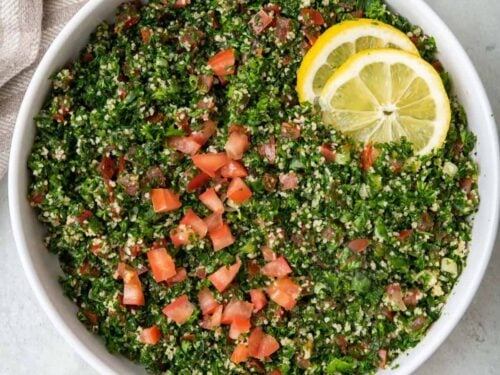

Tabouleh

Description:
Tabouleh is a traditional Lebanese salad that is one of the best salads to ever exist.
There are many different variations of the Tabouleh but the Lebanese version in my humble opinion is the best.
Ingredients:
- Parsley
- Tomatoes
- Mint
- Onions
- Soaked Uncooked Bulgur
- Olive Oil
- Lemon Juice
- Salt and Sweet Pepper
- Lettuce
- Pomegranate Juice
Steps:
- Chop up the parsley.
- Add the tomatoes, onions and mint.
- Add the olive oil while adding the bulgur while mixing the salad.
- Add the lemon juice and sweet pepper till it starts to taste good.
- Now add the pomegranate juice as much as you like pomegranate.
- Mix the salad.
- Add the lettuce on the side.